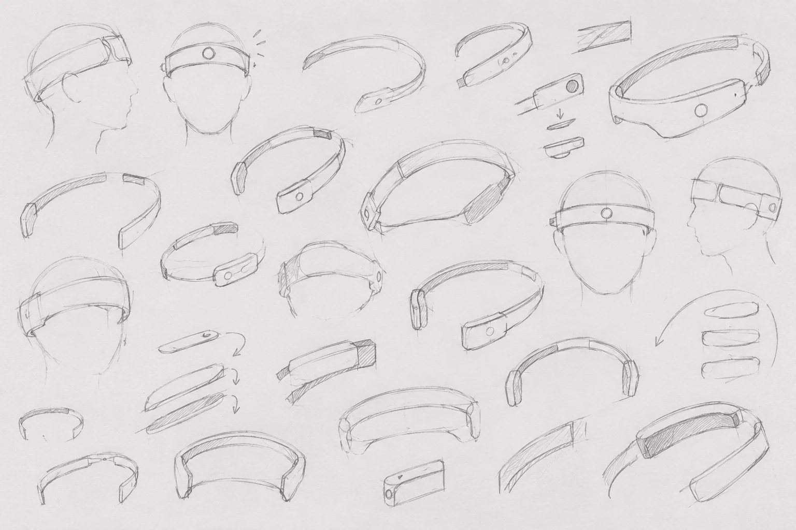
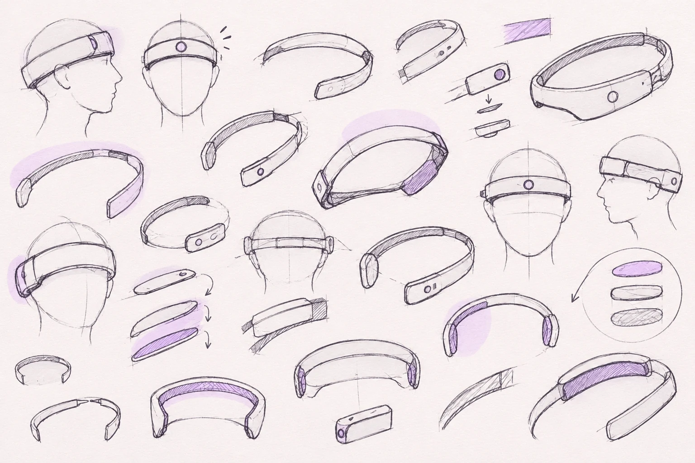
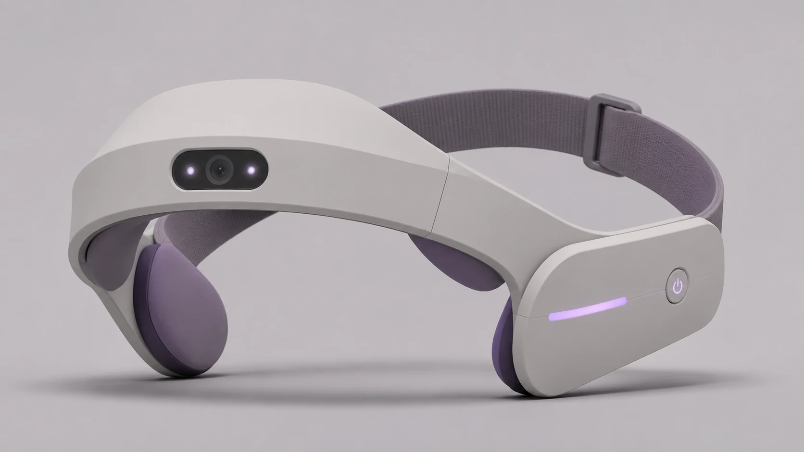
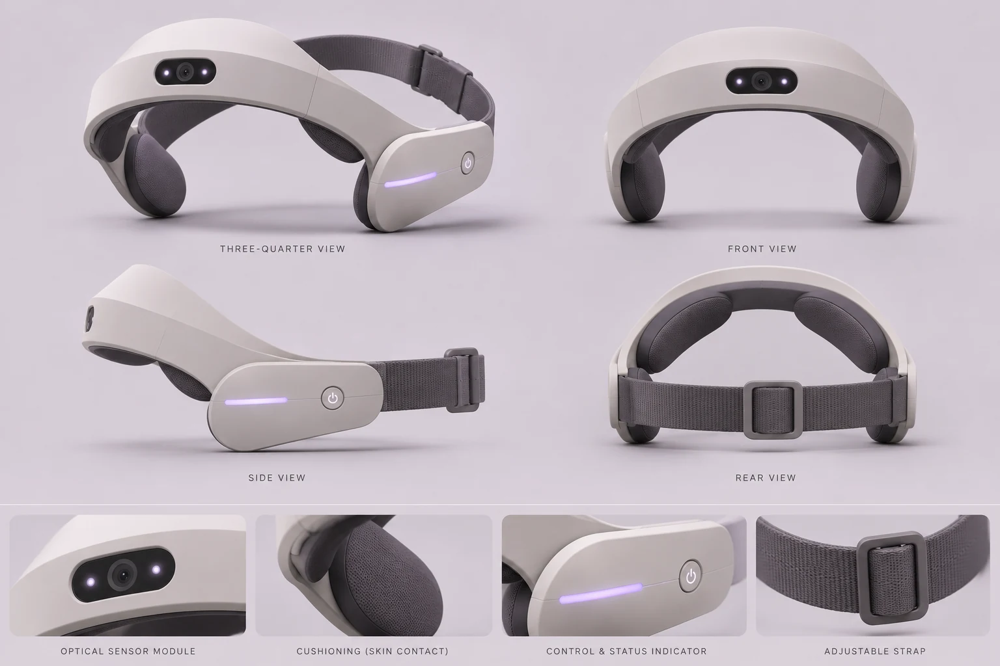

A proposed wearable tri-reflex screening concept exploring early identification of cardiac autonomic dysfunction.
NeuroPulse is a proposed early-screening concept for cardiac autonomic dysfunction, combining three reflex-based measurements in wearable headgear and a companion app.
Developed as an interdisciplinary team during INCUBATE, a hackathon hosted by IIT Bombay and JIPMER. The team brought together two MBBS students, one ECE student and a product-design perspective.
The concept explores how autonomic dysfunction may remain unnoticed and how a preliminary screening workflow might become more accessible in primary and community healthcare settings.
Project framing from the concept: “Catch what ECG can't” — an early-screening concept focused on nerve–heart response signals.
The concept has not been clinically validated. Performance and prevalence claims would need independent evidence before public use.
The team explored how early autonomic changes might go unnoticed in people with diabetes, and whether a guided, non-invasive screening concept could encourage timely clinical follow-up.
The design question was how to bring multiple physiological response signals into one understandable experience, without presenting a concept device as a diagnosis or a replacement for established clinical assessment.
Design direction: Explore a combined screening experience that is portable, guided and designed around a healthcare professional's workflow.
We focused on a general screening challenge: a person may feel well and still have early changes that are not captured by the checks routinely available in every setting.
The concept would require clinical validation and professional oversight before any screening or referral use.
The central design idea is to combine three physiological response channels in one wearable screening setup.
Uses a controlled light stimulus and camera-based observation of pupil response latency and recovery patterns. This channel is intended to reflect parasympathetic response.
Uses an auditory stimulus and records response timing and intensity. This channel is intended to reflect sympathetic response.
Uses pulse/PPG signals to analyse beat-to-beat rhythm patterns and trends, explored as a cardiac autonomic marker.
I explored the headband as a wearable arrangement for the proposed sensing components, moving from quick form sketches to refined proportions and rendered views.




The proposed experience uses a guided protocol followed by on-device processing and a colour-coded risk band.
The concept is presented as an ergonomic headgear rather than a conventional clinical cart or multi-device setup.
The concept also explores battery power, offline operation, ergonomic design and a short guided test.
NeuroPulse was envisioned for low-resource screening environments and community-level healthcare programmes.
These are proposed use cases and programme alignments, not confirmed partnerships, approvals or deployments.
NeuroPulse is an early tri-reflex fusion concept. Any performance claims would need evidence before they could be used as product specifications.
Compare the proposed signals and risk bands against recognised autonomic function tests and clinician assessment.
Test repeatability across users, age groups, skin tones, movement and environmental conditions.
Define signal-processing methods, thresholds, uncertainty and how false positives / negatives are handled.
Validate light and sound stimulus parameters, fit, hygiene, accessibility and use by trained staff.
Establish sensitivity and accuracy through appropriately designed clinical studies.
Confirm bill of materials, manufacturing cost, maintenance, calibration and field support before quoting affordability.
Important: No accuracy, sensitivity or early-detection performance is claimed here because those outcomes have not been clinically validated.
NeuroPulse brings together a wearable form factor, three reflex-based sensing concepts and a guided screening workflow in a single early-stage healthcare innovation proposal.
The next step is not simply scaling the concept: it is engineering the prototype, validating each measurement and testing whether the combined screening pathway is clinically meaningful and safe.
Reflection: A compelling medical-device concept must be as rigorous about what it cannot yet prove as it is ambitious about what it hopes to enable.
I love plucking a flower or leaf from a day and preserving it. Before you go, pick one. Add your name and take a tiny piece of this visit with you.